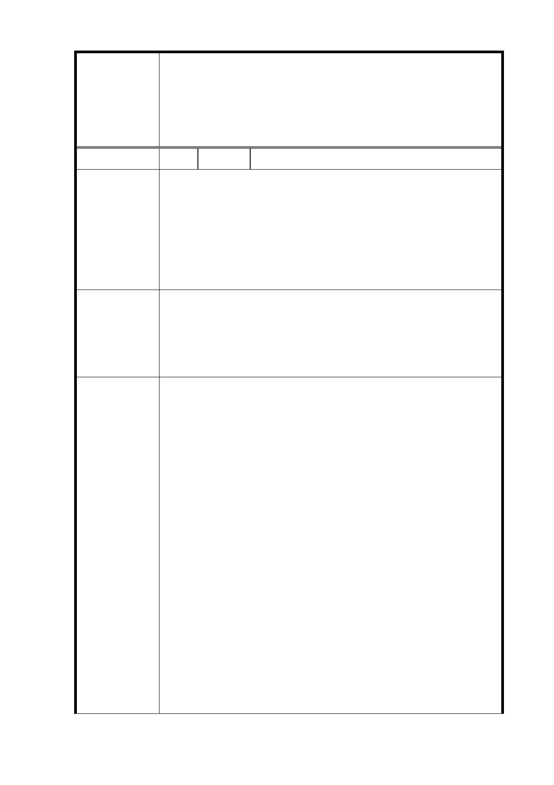

「變更臺北市信義區福德段二小段 319 地號等 26 筆土地（廣
慈博愛院及福德平宅）社會福利設施用地、公園用地、商業
案 名 區及道路用地為特定專用區主要計畫案」及「擬定臺北市信
義區福德段二小段 319 地號等 26 筆土地公共服務特定專用
區細部計畫案」
編 號 1 陳情人 陳○宏
一、「特定專用區」的開放空間和都市計畫的分區「公園」
在名詞定義上有所不同，都發局不應混為一談。
陳情理由
二、由開發後衍生的停車需求，汽車停車位約 1,952 席、機
車停車位 2,583 席，試問地下應開挖多少量體(地下幾
層樓)？要如何讓尖峰小時的服務水準維持在 D 級以
上？
一、「特定專用區」的建築容積降低，並留設適當的綠地，
以作為防災避難空間，開放空間無法作為防災使用。
建 議 辦 法 二、降低開發量體、減少戶數，以避免衍生過多的交通旅次
及車量。並兼顧周邊道路的容量及服務水準。
一、依 104 年 7 月 9 日「臺北市都市設計及土地使用開發許
可審議委員會」審議通過之都市設計準則，公共開放空
間留設原則及區為如下：
(1) 基地中心地帶應集中留設 11 及 20 公尺帶狀式開放空
間。
(2) 基地臨福德街側應集中留設廣場式開放空間基地臨福
德街側應集中留設面積 5,000 平方公尺廣場式開放空
間。
市府回覆
意 見 (3) 基地北側應退縮留設 60 公尺帶狀開放空間。
(4) 基地東、西、南側各分別留設 15 公尺帶狀開放空間。
(5) 依本局現階段規劃方案可提供公共開放空間 3.9 公
頃，並集中留設 2.22 公頃之公共開放空間。
二、經本府交通局評估，開發後大道路、福德街 84 巷之服
務水準將降低，需輔以相關配套措施予以改善，包括：
道路路型調整、規劃友善人行、自行車及大眾運輸轉乘
空間、停車場自福德街 84 巷、大道路兩側進出及停車
-7-